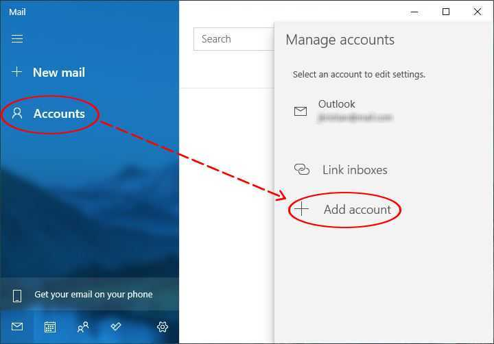
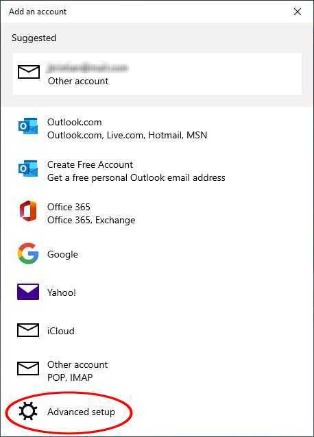
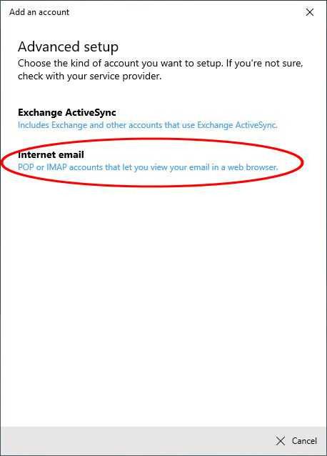
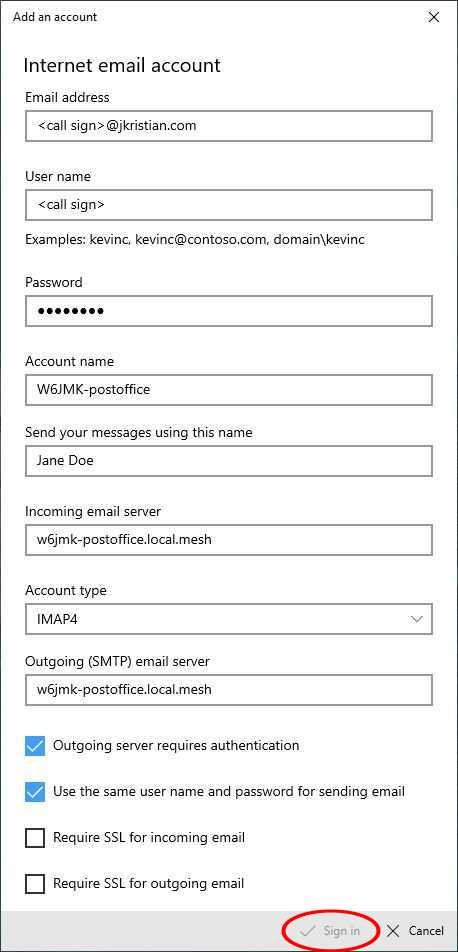

W6JMK-postoffice is an email server using IMAP, POP and SMTP protocols. It's compatible with many email apps that you can run on your computer, tablet or smartphone, such as Outlook, Microsoft Mail and Thunderbird.
To get started, create an account. Install an email client app, and configure it with:
Email messages are automatically relayed between this server and other email servers in the public Internet. That is, messages sent from the Internet to <your call sign>@jkristian.com will be delivered to your mailbox in this server. And you can send email from <your call sign>@jkristian.com to the Internet via this server. For example, you can exchange email with <call sign>@winlink.org, via this server and the Winlink CMS (Common Message Servers).
Your messages are encrypted for privacy when they're sent over the public Internet. But they're not encrypted when they're sent between W6JMK-postoffice and your computer, because sending encrypted data via amateur radio is illegal in the U.S.A.
Here's how to configure Microsoft Mail (the email app bundled with Windows 10).
Click 'Accounts' and 'Add account':

Click 'Advanced setup':

Click 'Internet email':

Fill out the form and click 'Sign in'.

To configure the Outlook app (not outlook.com):
You can change your password here. Log in with your old password, enter your new password twice and click 'Modify'.